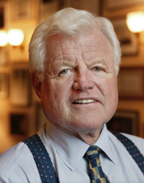
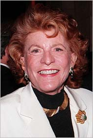
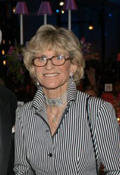

Chương 10

au Patrick và Jean Kennedy, hai trong năm người con gái, chỉ thêm một đứa bé nữa trong gia đình của Joseph Partick Kennedy, một đứa bé trai, Edward. Cả hai người con gái này là mối dây liên lạc êm đềm của gia đình, của toàn thể những phần tử trong giòng họ Kennedy. Và khi lớn lên họ cũng chia sẻ trách nhiệm, yểm trợ các anh của họ, trong những cuộc vận động tranh cử chính trị.

Kennedy Edward
Patrick kết hôn với Peter Lawford, tài tử màn bạc người Anh, và Jean kết hôn với Stephen Smith, một thương gia xông xáo và có nhiều khả năng, hiện tại được xem như là người thiết yếu trong gia đình Kennedy. Cuộc hôn nhân của Patricia sau 11 năm và bốn đứa con, ba trai và một gái, đã chấm dứt bằng một cuộc ly dị. Peter không bao giờ trở thành một phần tử của gia đình Kennedy với một đời sống riêng tư như thế của ông. Và, khi mà Peter không thể nào gia nhập vào thế giới của Patricia, nàng không thể rời bỏ thế giới của nàng.
Người Trung Hoa, hằng bao nhiêu thế kỷ qua, cho rằng người đàn bà là ngoại tộc, không còn dính dáng gì đến gia đình của cha mẹ một khi đã xuất giá. Thân xác, tâm hồn của người đàn bà đã thuộc về nhà chồng.
Trách nhiệm và bổn phận của người chồng trở thành của người vợ. Nàng không thuộc về gia đình nàng nữa, vì người chồng đã nắm trong tay quyền kiểm soát người vợ. Nàng không thể muốn quay về với cha mẹ lúc nào cũng được. Cha mẹ của người đàn bà lúc bấy giờ chính là cha mẹ chồng.
Patricia và Jean Kennedy là người Mỹ, họ không hiểu biết truyền thống gia đình của người Trung hoa, hoặc có biết đi nữa, họ cũng không theo được. Sở dĩ tôi nói qua truyền thống này ở đây, dĩ nhiên tôi công nhận người Trung Hoa, với nhiều tính khôn ngoan trên nhiều phương diện, và với kinh nghiệm thực tế của họ, họ hiểu rằng một cuộc hôn nhân lâu bền, phải là một cuộc hôn nhân mà người vợ chỉ biết đến duy nhất một gia đình bên chồng.
Cuộc hôn nhân Peter-Patricia đã gẫy đổ, bởi gặp phải sự kình chống của hai nguồn gốc gia tộc. Peter Sydney Ernest Lawford là người Anh chính gốc, con trai của ông bà cựu Trung tướng Sir Sydney Lawford.
Patricia là con gái lớn thứ hai trong các cô con gái của gia đình Kennedy có nhan sắc nhất, nhường nhịn và nhã nhặn nhất. Nhưng bà mẹ chồng cua nàng, bà Lawford chủ trương con trai của bà kết hôn với một cô gái người Anh vẫn tốt hơn, dĩ nhiên cô gái đó phải có gốc gác gia đình chức phận. Sự thật, bất kỳ cô gái nào cũng có thể làm dâu bà được, ngoại trừ một cô gái mang họ Kennedy.

Patricia Kennedy
Cha của Patricia, Joseh Patrick Kennedy, không mấy nhiệt tâm với cuộc hôn nhân của con gái. Ông không tán thành một tài tử màn bạc trở thành rể của ông, nhất là bọn tài tử người Anh, ông thường nhấn mạnh như thế.
Không lưu tâm đến, Patricia và Peter làm lễ cưới tại nhà thờ St. Thomas More ở Park Avenue vào ngày 25 tháng 4 năm 1954. Mười một năm sau, họ ly dị ở Gooding tiểu bang Idaho. Đó là cuộc ly dị đầu tiên trong gia đình Công giáo Kennedy.
Cuộc hôn nhân của Pat và Peter hình như cũng đã trải qua nhiều năm hạnh phúc. Lúc họ ly dị, ngay cả báo chí cũng không biết nguyên nhân xảy ra.
Peter Lawford lần đầu tiên gặp Jack Kennedy tại nhà của cố tài tử Gary Cooper vào năm 1946, trước ngày ông quen biết Patricia khá lâu. Và từ cuộc gặp gỡ đầu tiên này, Peter đã xúc động bởi hấp lực của Jack. Năm 1949, ông gặp Patricia, lúc ấy nàng làm việc cho đài NBC và Kate Smith.
Thành thật mà nói, tôi chưa bao giờ biết một gia đình nào như gia đình Kennedy, Peter nói. Ông chỉ là một đứa bé, có phần nào mơ mộng, được thầy riêng dạy dỗ, hấp thụ mọi truyền thống cổ của người Anh. Quê hương đối với ông là những nơi đồn trú của người cha, những nơi mà ông và người mẹ được luôn luôn mang theo.
"Cảnh sống nhộn nhịp của một đại gia đình quây quần bên nhau hoàn toàn xa lạ đối với ông. Và qua cuộc hôn nhân, bỗng chốc tôi thấy mình trở thành kẻ đứng bên ngoài, trong một tư thế gần như bị trùm lấp."
Những người trong họ Kennedy đã khôn ngoan trong việc duy trì vị thế của gia đình. Họ vẫn hướng về Pat, và biết Peter yêu thương nàng, nên họ luôn luôn mở rộng cánh cửa bất hòa và chờ đợi Peter bước qua. Họ không bao giờ bắt buộc Peter phải có quan niệm chánh trị và tôn giáo theo họ. Peter cũng không hề bị đẩy vào các môn thể thao mà người trong gia đình Kennedy ưa thích.
Thật ra, phải mất hai năm làm quen với tinh thần Kennedy tôi mới bắt đầu nhận được tin ngầm kết nạp tôi vào thành phần gia đình, sau khi người gây rắc rối cho tôi trong cuộc hôn nhân, cha của Pat, cuối cùng chấp nhận tôi. Từ đó ông tỏ ra dễ dãi đối với tôi. Nhưng dĩ nhiên là Peter đã không dễ dàng hòa hợp với gia đình này. Khi Pat kết hôn với Peter, một người đàn ông mang nặng cá tính và đắm mình vào sức quyến rũ của nghệ thuật, nàng phải hiểu một nghệ sĩ có thế giới riêng của họ và họ không bao giờ rời bỏ hoàn toàn thế giới này để dễ dàng bước sang một thế giới khác.
Ngay cả đến một người mang họ Kennedy cũng không thể làm thay đổi một nghệ sĩ. Những người không thể thay đổi, không thể xâm phạm đến. Nghệ sĩ đứng đầu. Họ có thể thoát ra trong bất kỳ hoàn cảnh, trong bất kỳ sự khống chế nào, bằng cách đơn giản là rút vào thế giới riêng của họ. Thế giới của Peter là thế giới khác biệt hoàn toàn với thế giới của Kennedy.
Thế giới Kennedy, kể cả đàn ông và đàn bà, là thế giới của những người hoàn thành một công việc tốt hơn là sáng tạo một công việc. Họ là những người được hướng dẫn để làm những việc có tính cách thực tế.
"Người nghệ sĩ là người sáng tạo, không làm theo sự hướng dẫn. Họ chỉ hiến dâng những gì mà họ sáng tạo được, Có thể được chấp nhận hoặc phản đối, và dù cho được chấp nhân hay phản đối, họ vẫn liên tục sáng tác hăng hái, hướng về sự thiện mỹ".. Peter Lawford không thể là người của phe nhóm, ông nói: "Có họ hàng với Tổng thống Hoa Kì là một danh dự lớn. Nhưng sẽ không, và không bao giờ theo đuổi được nghề nghiệp. Khi những người mang họ Kennedy đã chiếm giữ bạn bằng tâm hồn, tình cảm của họ, bạn sẽ trở thành như Kennedy trên mọi phương diện. Bốn đứa con của tôi sẽ không bao giờ là những kẻ cô độc Chúng sẽ là những đoàn viên đầy đủ lông cánh của bộ lạc đó.
Tuy nhiên, trường hợp cua Jean Kennedy Smith lại khác. Stephen Smith có một sức mạnh tiềm ẩn riêng. Gia đình ông có tiền khá lâu trước khi các người mang họ Kennedy biết đến lợi ích của sự giàu có. Không bao giờ mất bản sắc riêng, Smith còn sử dụng tài năng và kinh nghiệm của ông để phục vụ gia đình Kennedy ra được công nhận là rất cần thiết.

Jean Kennedy Smith
Ông đã tận tâm với gia đình Kennedy dù cho ông không phải là một con người của lý tưởng hoặc của tham vọng này. Ông là một thành viên phi chính trị của một gia đình chính trị. Thật ra, Smith thích Joseph Patrick Kennedy cha vợ của ông, ông muốn nối tiếp con đường dang dở của người cha vợ này, tìm cách nào có thể, để cho những người mang họ Kennedy nắm được quyền lực chính trị.
Ông là một thương gia trẻ tuổi, đã thành công trước khi kết hôn với Jean Kennedy vào năm 1956.
Jean Smith mắt xanh, tóc màu tím nhạt, là một người ít chính trị nhất trong số những người đàn bà thuộc gia đình Kennedy. Nàng chỉ vui với công việc lặt vặt trong gia đình. Jean thực sự là một hiền mẫu đối với các con là một hiền phụ đối với người chồng đẹp trai, thông minh một cách phi thường của nàng. Smith sắc sảo nhất trên lãnh vực sáng kiến, và bởi vậy, một năm sau hôn nhân, cha vợ của ông phải giao cho ông trông coi và khuếch trương các dịch vụ khai thác dầu hỏa của gia đình Kennedy. Hiện Smith điều khiển và quản trị số vốn đầu tư của gia đình Kennedy lên đến ba trăm triệu Mỹ kim mà không có bàn tán nào hết.
Smith tỏ ra thích hợp với gia đình Kennedy. Là một tay thể thao có hạng, ông có thể tham dự các trò chơi thể thao mà tất cả người trong gia đình Kennedy đều thích và ông chơi trội hơn tất cả, từ golf, tennis, trượt tuyết và cho đến cả môn dã cầu nữa.
Tuy nhiên thành công ưu việt của ông vẫn nằm trong các cuộc vận động tranh cử chính trị của gia đình Kennedy do chính tay ông điều khiển. Smith không bao giờ có khuynh hướng bước vào chính trường, dù nhiều thân hữu của ông cho biết bất kỳ nói về vấn đề gì, ông luôn luôn tìm cách xoay câu chuyện vào lãnh vực chính trị. Ít ra một lần, tôi có nghe kể lại: không có lãnh vực nào sử dụng trọn vẹn tài năng của bạn hơn là lãnh vực chính trị. Chính vợ ông, một người đàn bà Kennedy cũng tin rằng nếu Smith bước vào chính trường, ông có thể thành công lớn. Cảm giác riêng của một người, sau các thảm kịch giáng xuống gia đình này, là Stephen Smith sẽ tiếp tục những gì mà ông đã làm. Người quản trị tài sản của gia đình Kennedy, một cách chuyên tâm, đạt đến thành công vượt mức này, hy vọng giúp những người mang họ Kennedy trong thế hệ kế tiếp nắm lại quyền lực, tạo cho thế hệ này một quan niệm: họ phải là những người lãnh đạo trong đời sống chính trị quốc gia Hoa Kỳ.